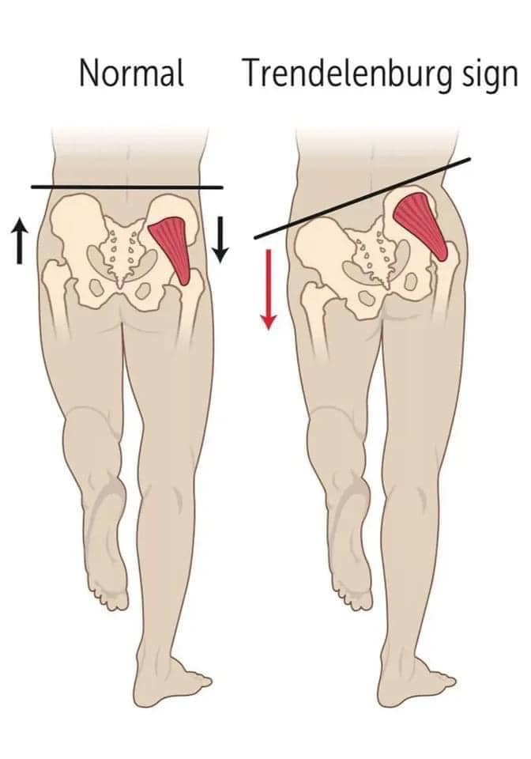
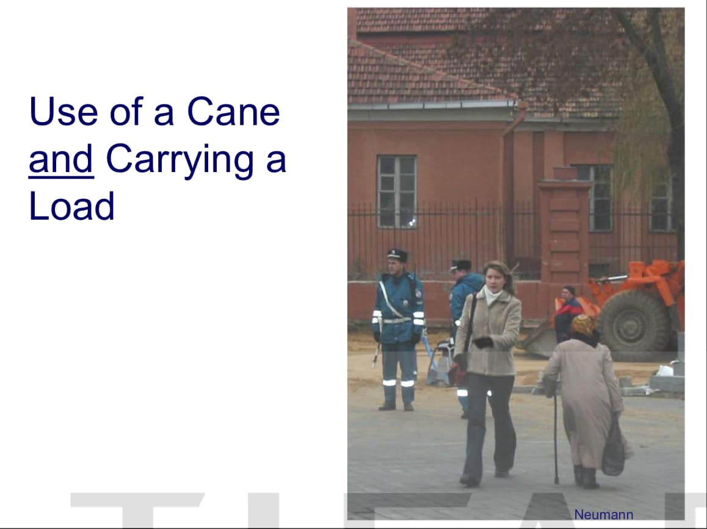
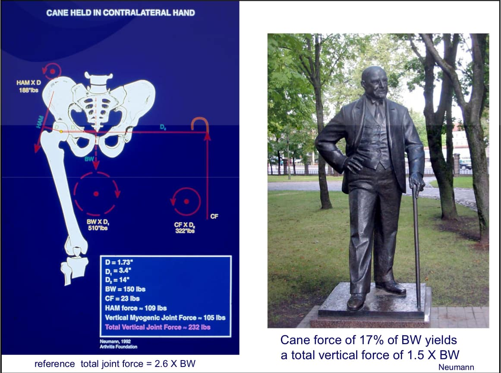
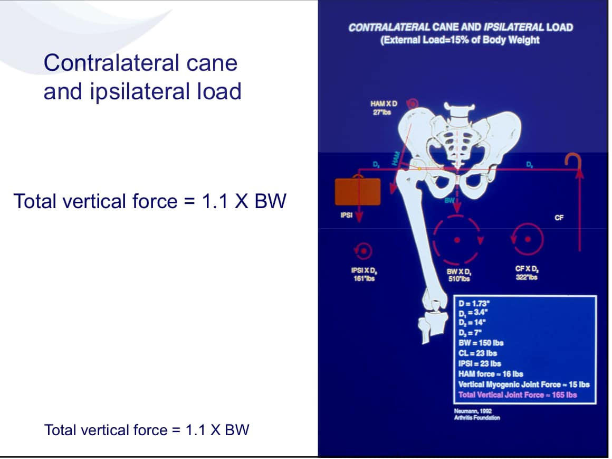
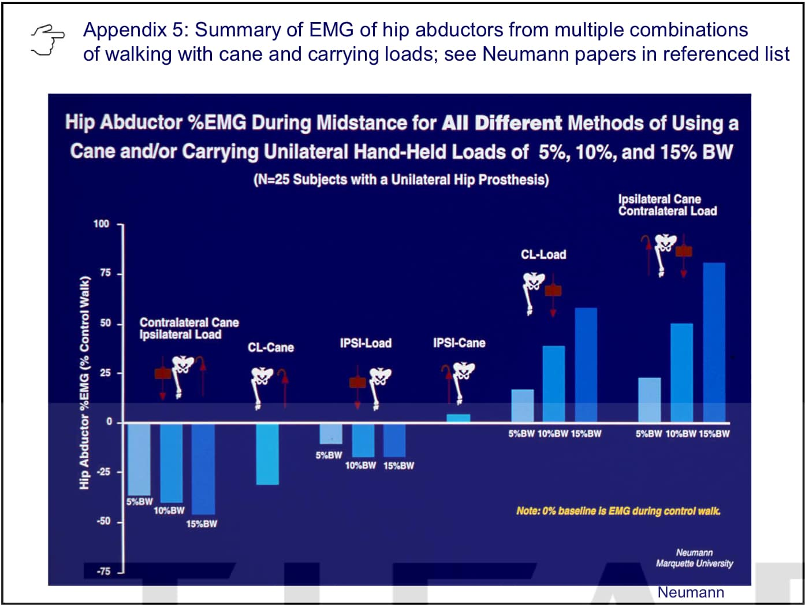

#髖關節痛 #拐杖要拄哪邊
#髖關節痛 #拐杖要拄哪邊
髖關節疼痛，造成原因很多，但常見伴隨有臀中肌無力的表現。
說到臀中肌無力，最著名的就是Trendelenberg Sign（圖一）
說的好懂一點，就是走路時單腳(ex:左腳)支撐地板的瞬間，如果發現骨盆往對側(右側)下降/掉落，就表示該側(左側)臀中肌無力。
臀中肌無力，也常見於久坐族，有效訓練臀中肌是必要的，在上週日讀書會，傅老師也提到臀中肌在閉鎖鏈的訓練模式下會比開放鏈的訓練更有效率，但其實每個人的狀況都有所不同，啟動的方式也都需要個體化調整。
老年化時代來臨，家中許多長輩隨著老化、久坐，#髖關節疼痛 合併 #臀中肌無力 ，讓人連好好走路都很困難，許多長輩也都需要拄著拐杖來輔助行走。
問題來了，那拐杖該拄在哪一邊？除了拄拐杖外，還有什麼方法可以減輕髖關節的疼痛嗎？（圖二）
先說結論：拐杖拄對側，重物提同側。
Countralateral cane and ipsilateral load
臀中肌的重要功能之一，就是穩定骨盆，在步態行走的單腳著地期要能撐拄骨盆的重量，讓另一支腳順利完成擺盪。
臀中肌的穩定，對骨盆產生了逆時鐘的力矩，但無力的臀中肌無法產生有效的逆時鐘力矩，這時候藉由拐杖的支撐與地面的反作用力，來幫助增加逆時鐘力矩，來對抗對側骨盆重量的順時鐘力矩，所以，拐杖要拄在對側。（圖三）
同理可證，手若提重物，則必須提在同側。（圖四）
這麼複雜的現象用簡單的生物力學及物理學就講解的清清楚楚，Neumann被稱為肌動學大師完全無人出其右。
Neumann甚至還做了實驗研究，把拄枴杖與提重物分別在同側、對側作排列組合，測量可以減輕或加重的力矩百分比。（圖五）
最佳解就是：拐杖拄對側，重物提同側。
對於家中長輩，若已經拄枴杖又喜歡去菜市場買菜的，記得提醒長輩：拐杖拄對側，重物提同側，安捏髖關節卡毋痛唷！！
Ps. 投影片取自TIFAR-Neumann髖關節課程
#Neumann髖關節大師課
#拐杖拄對側重物提同側




